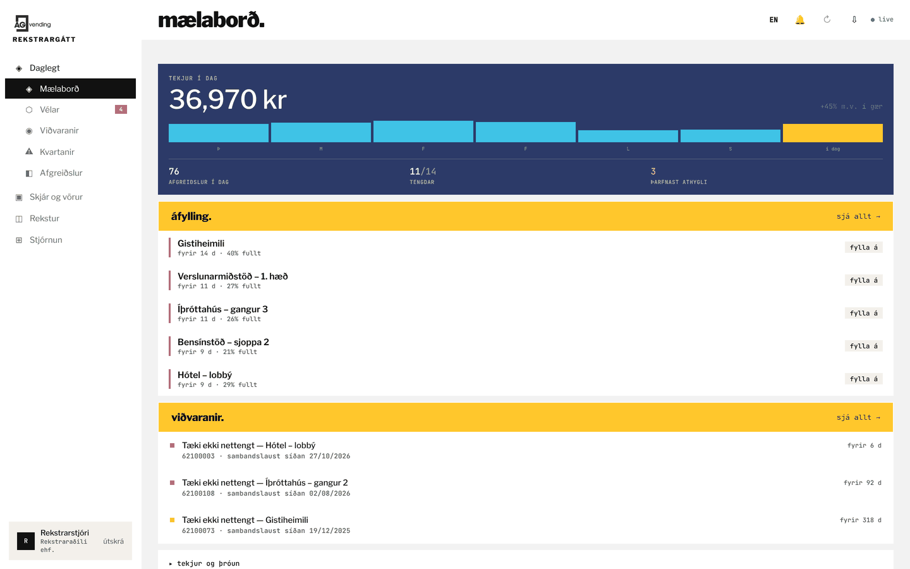
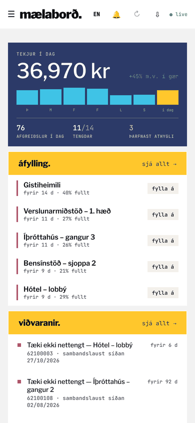
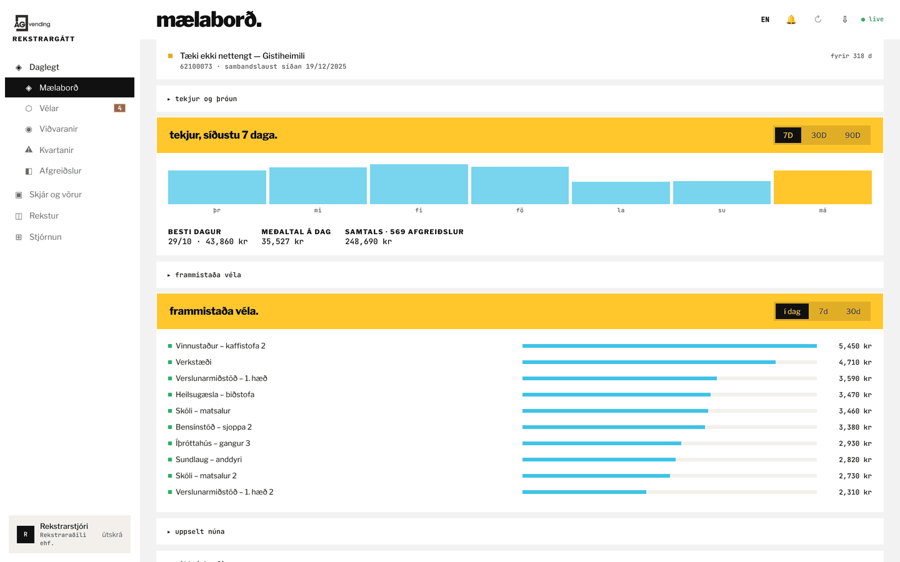
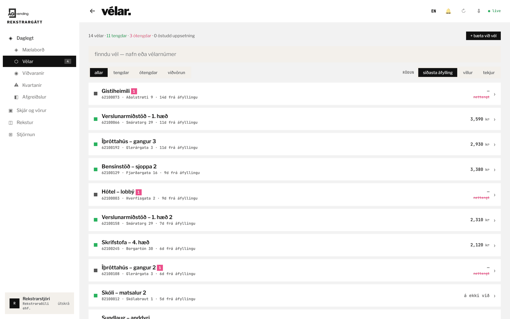
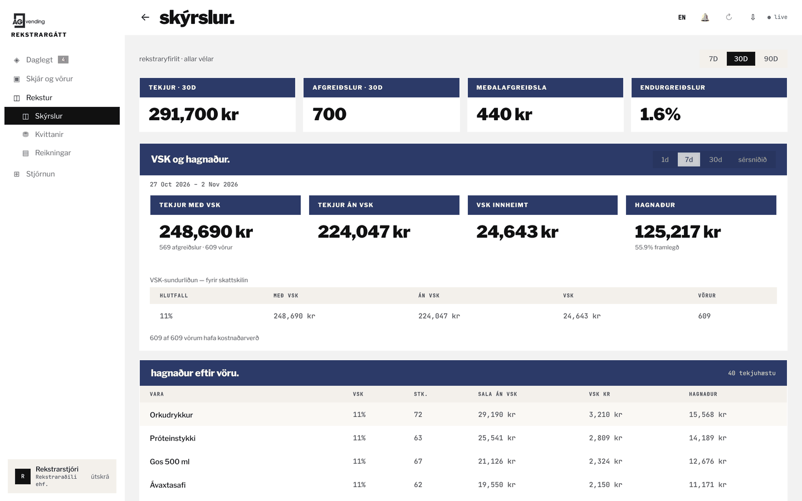
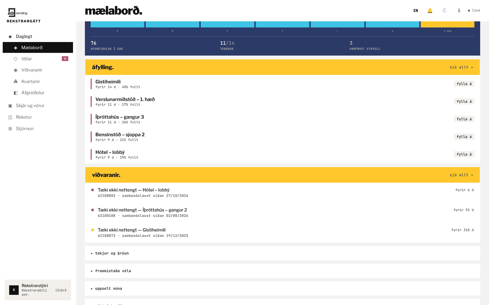
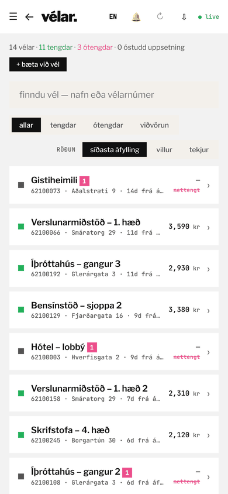
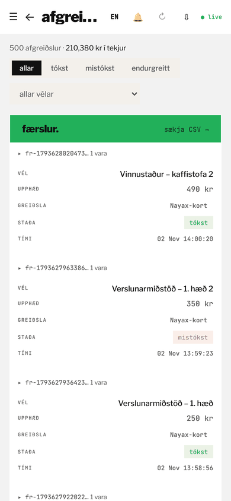

Sjáðu allar vélarnar í rauntíma.
Hvað selst, hvað er búið og hverja þarf að fylla. Rekstrarkerfi fyrir sjálfsala og snjallkæla: sala, lager, áfylling, viðvaranir og uppgjör á einum stað. Í vafra á skrifstofunni og í símanum á leiðinni.


Allt sem reksturinn þarf
Eitt kerfi í stað þess að púsla saman töflureiknum, skilaboðum og minnisblöðum.
- Sala í rauntímaTekjur flotans, í hverri vél niður á hverja færslu — dagsins, vikunnar og mánaðarins.
- LagerstaðaHvað er eftir í hverri vél, niður í einstök hólf, og hvað er uppselt núna.
- ÁfyllingarlistiVélarnar raðaðar eftir því hverja er brýnast að heimsækja.
- ViðvaranirVél sem dettur út, kæling sem bilar, hólf sem tæmist — á skjá og í tölvupósti.
- Uppgjör og VSKTekjur, VSK og framlegð eftir vöru. Bókhaldstenging við Payday, DK, Konto og Business Central. Kvittanir og útflutningur í CSV.
- FjarstýringOpna hurð kælis, stilla kælingu, taka vél úr sölu — án þess að fara á staðinn.
- KvartanirKvörtun kemur úr vélinni sjálfri; þú svarar og endurgreiðir úr sama viðmóti.
- Notendur og aðgangurStarfsmaður sér aðeins sínar vélar. Rekstrarstjóri sér allt og býður öðrum aðgang.
Salan
Tekjur dagsins efst, og svo niður í hvern dag, hverja vél og hverja færslu.
- Hvaða dagar skila og hvaða dagar ekki
- Hvaða vélar bera sig — raðað eftir tekjum
- Hver einasta færsla, með útflutningi í CSV

Lagerinn
Hvað er eftir í hverri vél. Þú sérð hvað er búið áður en viðskiptavinurinn gerir það.
- Hvaða vara er búin, í hvaða vél, og hversu lengi
- Nettengd eða ekki, og hvenær var síðast fyllt á
- Síðasti söludagur eftir lotum

Uppgjörið
Tekjur, VSK og framlegð eftir vöru — yfir sjö daga, þrjátíu eða níutíu. Út í CSV fyrir bókarann.
- VSK innheimt og tekjur án VSK
- Framlegð eftir vöru, ekki bara sala
- Mest sölu vörur og þær sem hreyfast ekki
- Bókhaldstenging við Payday, DK, Konto og Business Central

Forgangur, ekki fastar rútur
Vélar eru ekki jafnar. Sumar þarf að heimsækja í hverri viku, aðrar standa hálffullar mánuðum saman. Fastar rútur láta þig keyra á báðar jafn oft.
Þess vegna raðar kerfið vélunum eftir þörf — hversu langt er síðan var fyllt á, hversu full vélin er, hvað er uppselt — frekar en að reikna út akstursleið. Þú ákveður hverja þú heimsækir; listinn segir þér hverjar eru farnar að kosta þig peninga.

Sama kerfið í símanum
Ekki stytt útgáfa og ekki sérstakt smáforrit — sama kerfið, sami aðgangur, í vafranum í símanum. Þar fer reksturinn fram.


Það sem enginn sér fyrr en það vantar
Sjálfsali sem hættir að taka kort lítur nákvæmlega eins út og sjálfsali sem enginn notaði. Kerfið er byggt í kringum þann mun.
- Viðvaranir í tölvupóstVél dettur út, kæling bilar, hólf tæmist — á skjánum og í pósti, ekki í loggskrá sem enginn opnar.
- FjarstýringOpna hurð kælis, stilla kælingu, taka vél úr sölu — án þess að fara á staðinn.
- Kvittanir og leigureikningarKvittun í tölvupósti til kaupanda, og leigureikningar með hreyfingayfirliti.
- Kvartanir og endurgreiðslurKvörtun kemur úr vélinni sjálfri; þú svarar og endurgreiðir úr sama viðmóti.
Við notum þetta sjálf, alla daga.
AG Vending rekur sjálfsala og snjallkæla á höfuðborgarsvæðinu. Kerfið hér er ekki hliðarverkefni — það er kerfið sem við stýrum okkar eigin vélum með, og það er byggt á því sem raunverulega klikkar í rekstrinum.
Það þýðir líka að kerfið er á íslensku, verðin eru í krónum, VSK er reiknaður eins og hér er gert, og sá sem svarar þér þekkir vélina sem þú ert að tala um.
Og kerfið er innifalið í leigunni á vélunum. Ekkert mánaðargjald á vél fyrir hugbúnaðinn, ekkert aukagjald fyrir fleiri notendur eða fleiri skýrslur — vélin og kerfið fylgjast að.
Fá kynningu
Skildu eftir nokkrar upplýsingar og við setjum upp kynningaraðgang fyrir þig og förum yfir kerfið með þér.
Hvað gerist næst
- Við svörum og bókum stuttan yfirlitsfund
- Þú færð kynningaraðgang með sýnigögnum
- Svo skoðum við hvað passar þínum rekstri